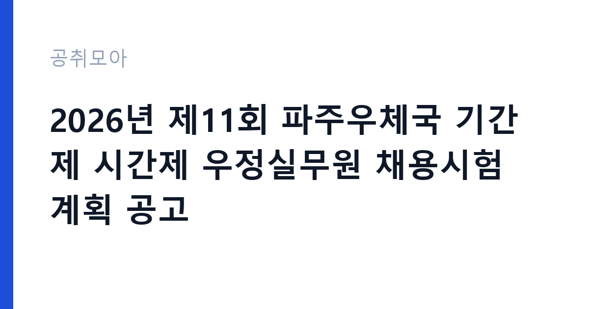

[국가기관] 2026년 제11회 파주우체국 기간제 시간제 우정실무원 채용시험 계획 공고
과학기술정보통신부 우정사업본부 경인지방우정청 파주우체국 · 경기 · 마감 2026-09-24 (D-7) · 출처 나라일터

한눈에 보는 모집 조건
| 기관 | 과학기술정보통신부 우정사업본부 경인지방우정청 파주우체국 |
|---|---|
| 공고명 | 2026년 제11회 파주우체국 기간제 시간제 우정실무원 채용시험 계획 공고 |
| 고용형태 | 기간제 |
| 근무지 | 경기 |
| 게시일 | 2026-09-17 |
| 마감일 | 2026-09-24 (D-7) |
지원자격, 이렇게 읽으세요
- 기간제 시간제 우정실무원 1명
- 접수 ~2026-09-24 마감
- 세부 조건은 원문 공고문 확인
공고문의 응시자격은 짧게 쓰여 있지만 실제로는 세 가지를 봅니다. 첫째 결격사유 해당 여부, 둘째 자격·경력의 직무 연관성, 셋째 근무 시작 가능일입니다. 셋 중 하나라도 애매하면 원문 공고문의 세부 조항을 먼저 확인하고 지원서를 쓰세요. 특히 과학기술정보통신부 우정사업본부 경인지방우정청 파주우체국 공고는 기간제 전형이라 서류에서 직무 연관 키워드(국가기관)를 명시하는 게 유리합니다.
이 공고의 포인트
이 공고의 관전 포인트는 ''입니다. 과학기술정보통신부 우정사업본부 경인지방우정청 파주우체국이 내건 조건 가운데 '기간제 시간제 우정실무원 1명' 대목이 서류의 분수령이 됩니다. 해당되면 주저 없이 지원하고, 애매하면 원문 공고문의 세부 조항을 먼저 대조해 보세요. D-7 일정상 오늘 내로 판단하는 게 좋습니다.
전형은 어떻게 진행되나
일반적인 순서는 서류심사 통과 후 면접심사입니다. 서류에서는 직무와 연결되는 경험이 있는지, 면접에서는 그 경험을 직접 설명할 수 있는지를 봅니다. 마감일(2026-09-24) 코앞에 몰리면 원서 접수 자체가 안 될 수 있으니 최소 하루 전에 제출하세요. 제출 뒤에는 접수번호·수험표가 정상 발급됐는지 확인이 필수입니다.
원문에서 확인한 전형 방식
파주우체국 공고 제2026-29호 2026년 제11회 파주우체국 주관 기간제 우정실무원 채용시험 계획을 다음과 같이 공고합니다. 2026. 9. 17. 파 주 우 체 국 장 1. 채용직종 및 채용인원 : 기간제 시간제 우정실무원 1명 2. 채용일정 - 원서접수기간 : 2026. 09. 21.(월) ~ 2026. 09. 24.(목) - 서류합격자발표 : 2026. 09. 29.(화) - 실기 및 면접시험 : 2026. 09. 30.(수) - 최종합격자 발표 : 2026. 10. 02.(금) 3. 필수제출서류 : 응시원서, 이력서, 자기소개서, 개인정보수집이용동의서, 주민등록초본, 범죄사실부존재확인서 등 - 제출서류 관련 자세한 내용은 공고문 붙임 파일 참고
위 내용은 과학기술정보통신부 우정사업본부 경인지방우정청 파주우체국 원문 공고의 전형 항목을 그대로 옮긴 것입니다. 단계별 배수와 평가 요소가 적혀 있으니 본인 강점과 맞는 단계에 맞춰 준비 순서를 정하세요. 전형별 합격자 발표일도 원문에서 함께 확인하는 것이 좋습니다.
이런 분께 추천해요
- 경기 근무가 가능한 분 — 통근·거주 조건이 맞는지가 1순위입니다
- 기간제 전형을 찾는 분 — 국가기관 분야 관심자라면 우선 검토 대상입니다
- 마감(2026-09-24) 안에 서류를 낼 수 있는 분 — D-7이니 오늘 지원서 초안부터 잡으세요
지원 전 체크리스트
- 응시자격 중 본인 해당 항목에 표시했는가
- 가점·우대 증빙 발급 소요일을 확인했는가
- 마감 당일이 아닌 2026-09-24 전날 제출 계획인가
- 기간제 계약조건(기간·연장)을 읽었는가
모집 일정과 제출 타이밍
게시일은 2026-09-17, 마감은 2026-09-24입니다. 남은 기간은 약 7일입니다. 서류 준비에 6일을 쓰고 마지막 하루는 접수·확인용으로 남겨두세요. 공공 채용은 마감일 24시간 전부터 지원자가 몰려 접수 페이지가 느려지거나 증빙 업로드가 실패하는 일이 잦습니다. 일정 운영의 정석은 이렇습니다. 첫날에는 공고문과 직무기술서를 출력해 응시자격·우대사항에 형광펜을 치고, 중간 기간에는 자기소개서 초안과 증빙 스캔을 끝내고, 마감 전날에는 접수 시스템에 미리 입력까지 마쳐 두는 것입니다. 마감 당일에 처음 접속하는 지원자가 가장 많이 탈락합니다. 접수번호가 발급되고 수험표(또는 접수확인서)가 출력돼야 접수가 끝난 것이니, 제출 후 확인증까지 꼭 챙기세요.
직무 이해하기: 국가기관
국가기관 채용은 법령상 결격사유 심사가 엄격합니다. 병역, 정년, 겸직 금지 조항을 본인 상황에 대입해 먼저 점검하세요. 보안·신원조회가 필요한 직위는 합격 후에도 탈락 사유가 될 수 있어 사전에 결격 여부를 확인하는 것이 시간을 아끼는 길입니다. 과학기술정보통신부 우정사업본부 경인지방우정청 파주우체국의 이번 채용(기간제)도 같은 잣대로 보면 됩니다. 공고 제목에 적힌 분야명과 직무기술서의 필요역량을 나란히 놓고, 본인 경험에서 겹치는 키워드를 세 개 이상 뽑아보세요. 그 세 개가 자기소개서와 면접 답변의 뼈대가 됩니다.
자기소개서 작성 팁
자기소개서에서 평가자가 찾는 건 직무와의 연결고리입니다. 서두에 지원 분야(국가기관)를 택한 이유를 한 문장으로 밝히고, 이어서 수치로 증명되는 경험 두 가지를 구체적으로 서술하세요. 마무리는 입사 후 1년의 실행 계획으로 닫습니다. 과학기술정보통신부 우정사업본부 경인지방우정청 파주우체국 지원자가 자주 놓치는 감점 포인트는 분야와 동떨어진 성장 배경 나열, 근거 없는 역량 주장, 마감일(2026-09-24) 착오입니다. 기간제 모집은 빠른 실무 적응이 관건이라 출근 가능 시점을 분명히 적는 것이 플러스가 됩니다.
면접 준비 포인트
면접은 서류에 쓴 경험의 진위 확인과 조직 적합성 검증이 목적입니다. 자기소개서에 적은 두 가지 경험을 1분 스피치로 말할 수 있게 연습하고, 과학기술정보통신부 우정사업본부 경인지방우정청 파주우체국의 최근 보도자료나 경영공시에서 핵심 사업 하나를 골라 지원 분야와 연결해 답변을 준비하세요. 마지막 질문 시간에는 근무지(경기)·근무형태(기간제)를 감당할 수 있다는 의지를 짧게 밝히는 것이 효과적입니다. 복장은 단정하게, 도착은 30분 전에, 질문에는 결론부터 말하는 것이 공공기관 면접의 기본입니다.
급여·근무조건 읽는 법
급여표를 볼 때는 기본급과 실수령액을 구분해야 합니다. 공고문 수치는 대개 기본급이라 수당·상여가 빠진 금액입니다. 기간제 모집에서는 계약 기간과 갱신 조건, 4대 보험·퇴직금 적용이 핵심 체크 항목입니다. 과학기술정보통신부 우정사업본부 경인지방우정청 파주우체국 원문의 보수 규정을 펼치고, 근무지(경기)가 외곽이거나 야간·주말 근무가 있다면 주거·교통 지원 조항까지 확인한 뒤 지원서를 내세요.
자주 묻는 질문
- 마감일(2026-09-24)을 넘기면 지원할 수 있나요?
없습니다. 공공 채용은 마감 시각 이후 접수를 받지 않습니다. 시스템 마감 1시간 전에는 대기열이 길어지니 D-7을 보고 미리 제출하세요. - 경기 외 거주자도 지원 가능한가요?
공고에 거주 제한이 별도로 없으면 전국 지원이 가능합니다. 다만 일부 지자체·교육청 공고는 거주·이전 조건이 붙으니 원문 응시자격란을 확인하세요. - 기간제 전형에서 가장 중요한 서류는 무엇인가요?
직무 연관성을 보여주는 자기소개서와 증빙(자격증·경력증명서)입니다. 과학기술정보통신부 우정사업본부 경인지방우정청 파주우체국 심사는 정량(자격·경력)과 정성(지원동기·직무이해)을 함께 봅니다.
함께 보면 좋은 공고
[국가기관] 중대범죄수사청 수사관 채용 공고 — 마감 2026-09-22[국가기관] 2026년도 제2차 기간제근로자(환경관리사) 서류전형 합격자 발표 및 면접시험 공고 — 마감 2026-09-22[국가기관] 2026년 서울지방국토관리청 공업서기보(운전직류) 경력경쟁채용시험 공고 — 마감 2026-09-28출처: 나라일터 공개정보를 바탕으로 공취모아가 정리한 안내글입니다. 모집 조건·일정은 변경될 수 있으니 지원 전 반드시 원문 공고문을 확인하세요. 본 글은 정보 제공용이며 합격을 보장하지 않습니다.